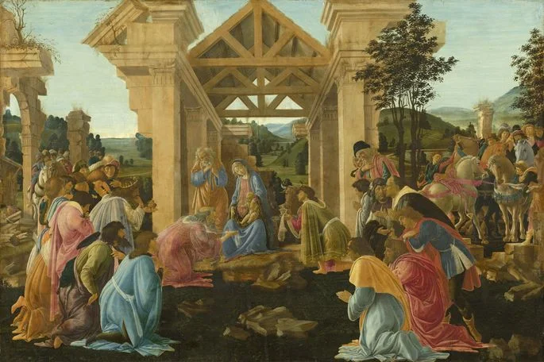

O Renascimento Artístico representou uma das vertentes do período renascentista com a profusão de diversas obras.
Lembre-se que o Renascimento foi um movimento artístico, intelectual e cultural que teve início no século XV na Itália.
Foi com o declínio do sistema feudal e de diversas caraterísticas associadas ao período medieval, que surgiu a Renascença, um período de efervescência cultural, artística e científica que se espalhou pela Europa.
Diferentemente da arte medieval, o renascimento artístico esteve inspirado na antiguidade clássica, ou seja, nas artes greco-romana, que haviam sido esquecidas durante séculos. Para os artistas do renascimento, o contexto associado ao período medieval impossibilitou a evolução da arte em diversos aspectos.
Isso porque, o medievo esteve intimamente relacionado a uma cultura religiosa, donde o teocentrismo (Deus no centro do Universo) regia a vida das pessoas. Foi a partir do avanço científico, social e cultural que surge o movimento do renascimento, o qual foi marcado sobretudo pelo caráter humanista.
Assim, o teocentrismo medieval dá lugar ao antropocentrismo renascentista, com a chegada da Idade Moderna. A grande contribuição da arte renascentista foi a descoberta da perspectiva e da profundidade. Assim, do plano reto e bidimensional da arte medieval, a arte da renascença promoveu um outro olhar.
Outros aspectos, não menos importantes, explorados pelos artistas do renascimento, foram o equilíbrio das formas e a busca da harmonia, fundamentadas na arte clássica. Vale lembrar que o renascimento artístico incluiu a evolução da pintura, escultura, arquitetura e literatura, valorizando aspectos humanos e da natureza. Ainda que muitos temas explorados pelos artistas do renascimento estejam associados ao plano religioso e espiritual, a mudança de mentalidade da época proporcionou incluir uma variedade de temáticas. Os assuntos abordados variavam desde os costumes, a mitologia, as paisagens, dentre outros.
Leia mais...